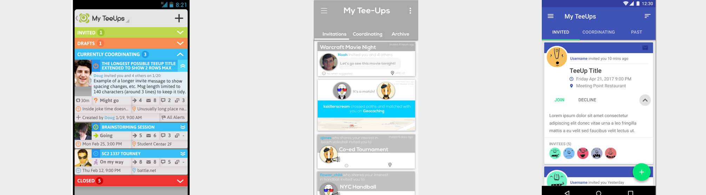
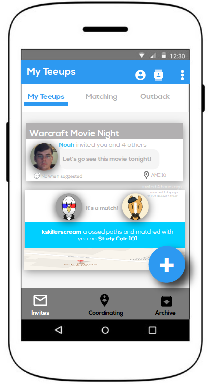
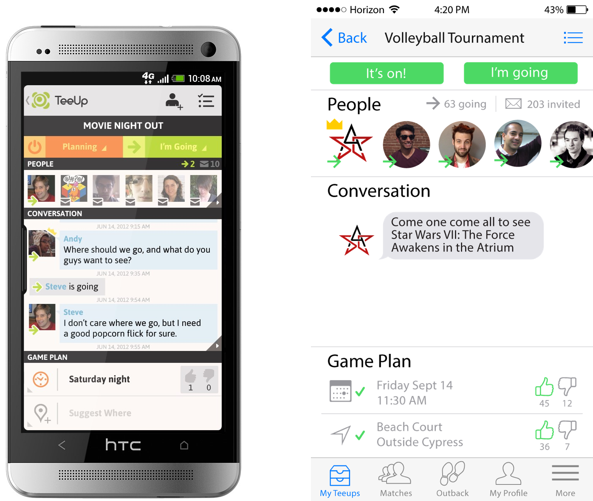

coo-e
Imagine planning a Friday night out to the movies with your friends. Things can get pretty complicated...which movie are we going to see? How are we getting there? Are we meeting at someone’s place first? Should we get dinner afterwards? Maybe ice cream?
Say hello to coo-e! An exciting new platform that makes the experience of coordinating activities with your friends a whole lot better. I was hired in the Summer of 2016 to help redesign a few of coo-e's problematic screens.
My Roles : UX Designer
The Problem:
- The app, originally designed in 2013, needed updating. How could we use user research to update a few screens using new mobile design guidelines and protocols?
In 2013, Google’s Material Design and iOS design guidelines were not at the caliber they are today. Coo-e needed to follow these now standard protocols.
The Solutions:
From prior user testing, we found that the old Inbox screens were too cluttered with information and very confusing. Our first step was to brainstorm how we could make this process easier for the user.
The first interaction change we made was to get rid of the drop downs and replace them with top navigation tabs. This created a seamless transition between the different inbox states and is complies with Material Design guidelines.
Next we decided to use card components to display all the information needed on an invite. This allowed for less clutter and the information is now presented in a more straightforward way.

On the far left is the original inbox design. The middle is what I mocked up in Axure and Illustrator and on the right is the high-fidelity version with Material Design guidelines implemented.
A major frustration point was deciding if we wanted to keep the side drawer navigation or
incorporate Material Design's top and bottom navigation. Below is an example of utilizing both top high level navigation and bottom low level navigation.

We decided to keep the side drawer navigation since we found that too many tabs became confusing for the user.
I then decided to play around with flat design. Coo-e was always designed for Android platforms so iOS was new territory. You can see below the old Android design and on the right is the new iPhone version.
